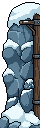
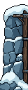
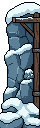
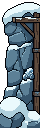
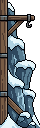
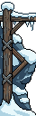
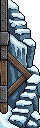
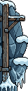

Snowy Mountain · stronger board sides
Stage 2 is an asset review. Two distinct snowy cliff/support designs, split into upper, middle and footing modules. The current Unity scene and all approved artwork remain unchanged. Corner generation is Stage 3; scene assembly is Stage 4.
Left: broad snow-loaded cliff with an embedded timber upright. Right: exposed diagonal timber bracing, stepped snow and a short ice lip. Both use the existing snow/stone/wood material family.
20 PixelLab generations used (two Pro calls, eight raw candidates). Balance: 4,868. No additional generation was used for cleanup.
Raw selection → native cleanup
Cleanup consolidated near-black/material shades, removed the left stray faceted ornament, connected the right shadowed cliff, and completed the cut lower rock contours. Transparent clearance was added without resizing source pixels.
Native files and editable modules
Each card shows 1× and 3× views. Complete sources are 44×142; upper/middle modules are 44×60; footings are 44×52. Opaque palette counts are 13–14.
All PixelLab candidates

Left 0 — selected
Left 1 — unselected
Left 2 — unselected
Left 3 — unselected
Right 0 — unselected
Right 1 — selected
Right 2 — unselected
Right 3 — unselectedVerification and next review
All ten PNGs have binary transparency and transparent edge clearance. All ten editable files reopen/export pixel-identically. The overlapping modules reconstruct both complete sources exactly at source offsets 0, 40, 56 and 90. No fractional scaling or resampling was used.
These are structural overlap modules, not seamless square terrain tiles. Tall-screen repetition, board-rim underlap and actual UI clearance will be checked in Stage 4. The common gutter is narrower than the full 42-pixel occupied width: structural pixels will need to sit behind the opaque frame or extend beyond the screen edge, while complete snow/prop silhouettes stay clear of the playable opening. Board size stays locked.
Exact asset QA · Stage notes · Unchanged actual Unity baseline · Composition target
Stopping for Stage 2 review. No corners generated, no scene or gameplay changes, no merge.